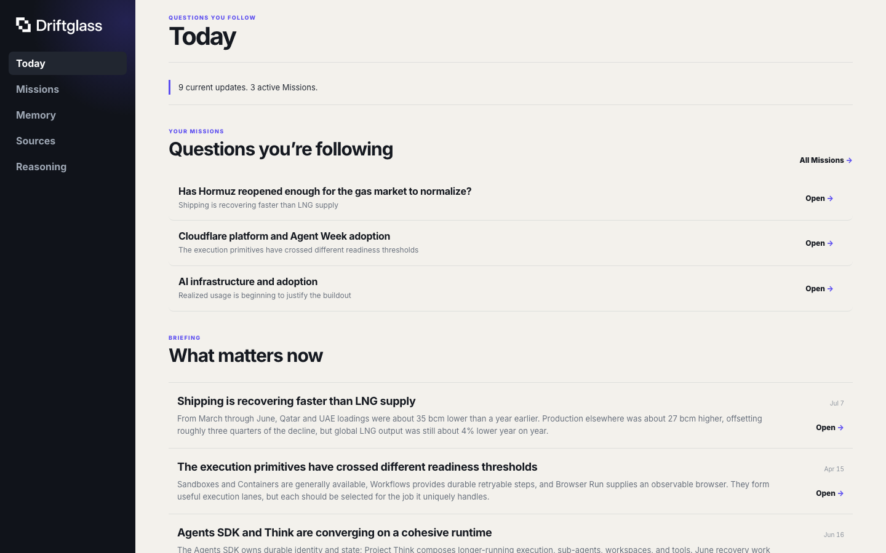
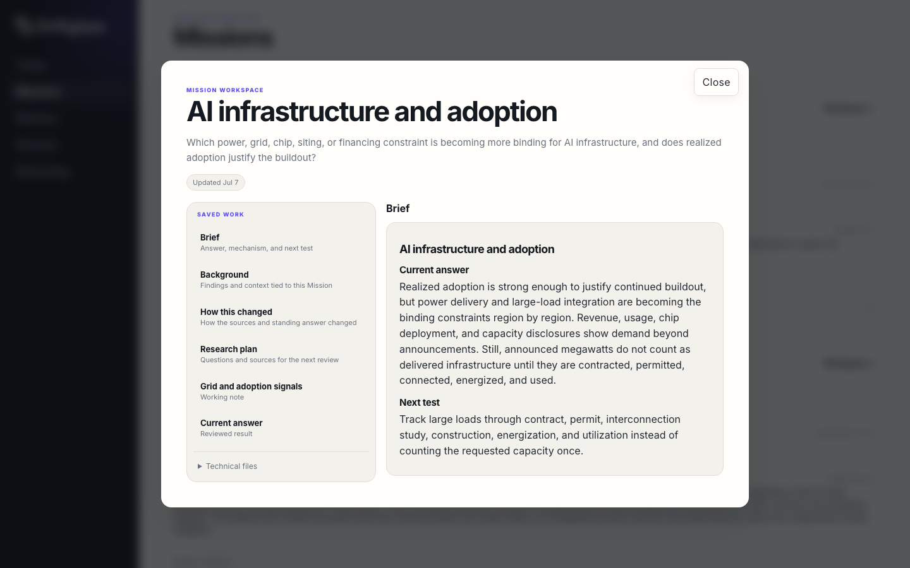
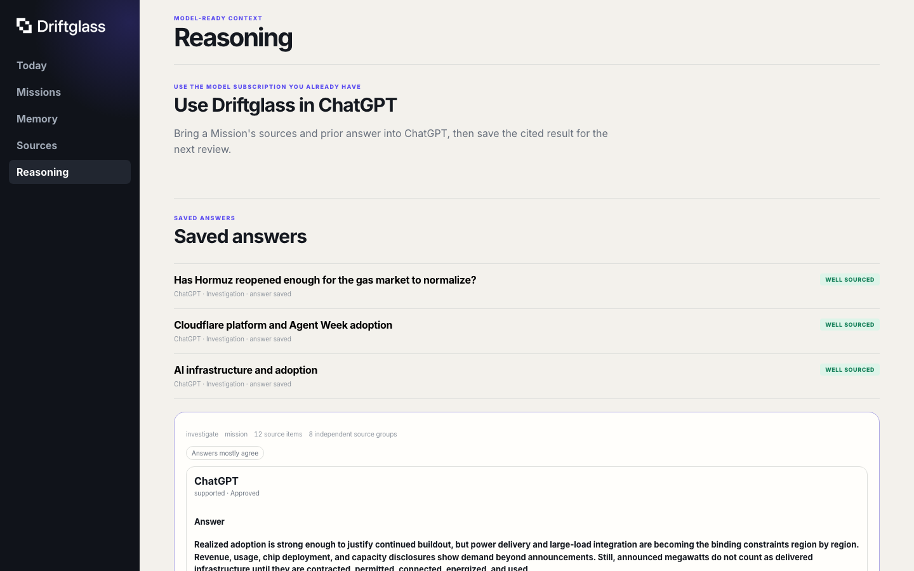
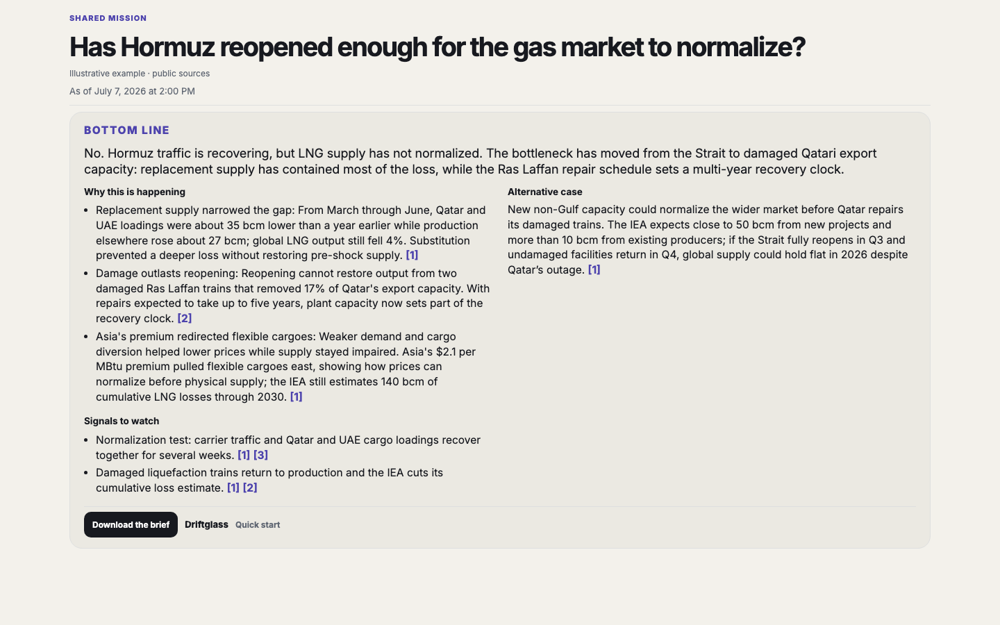
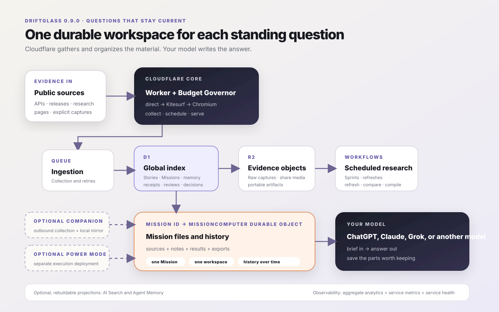

01
See what changed
Repeated coverage is consolidated into the developments worth opening.
Product showcase
Driftglass follows the sources you choose and keeps a cited answer with the causes, strongest alternative, and signals that would change it.
The research stays with the question, so a material change updates the answer instead of starting the work over.

Repeated coverage is consolidated into the developments worth opening.

Sources, working files, answer history, and signals live with the Mission.

Save the model's answer, supporting judgments, and source coverage for the next review.
This illustrative example asks whether LNG supply normalized after traffic through Hormuz resumed.

Open the full source-linked analysis, or download its portable Drop Capsule.
The cloud core works without a model API key. Optional local collection and heavier Computer work remain separate.
